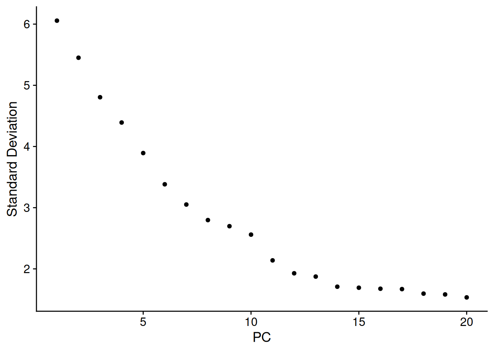
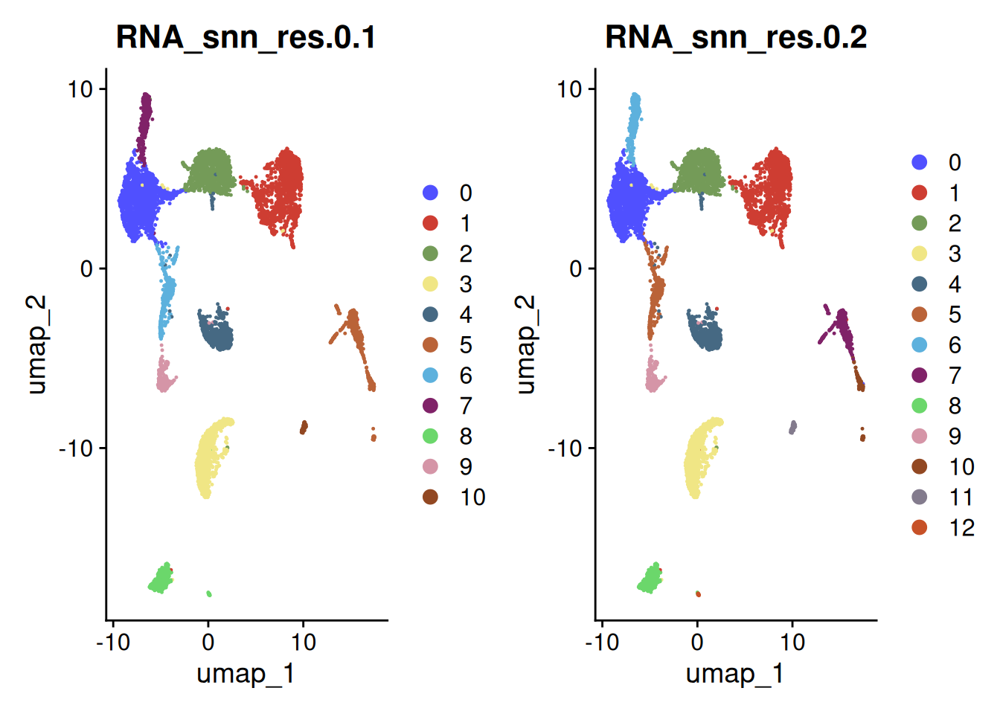
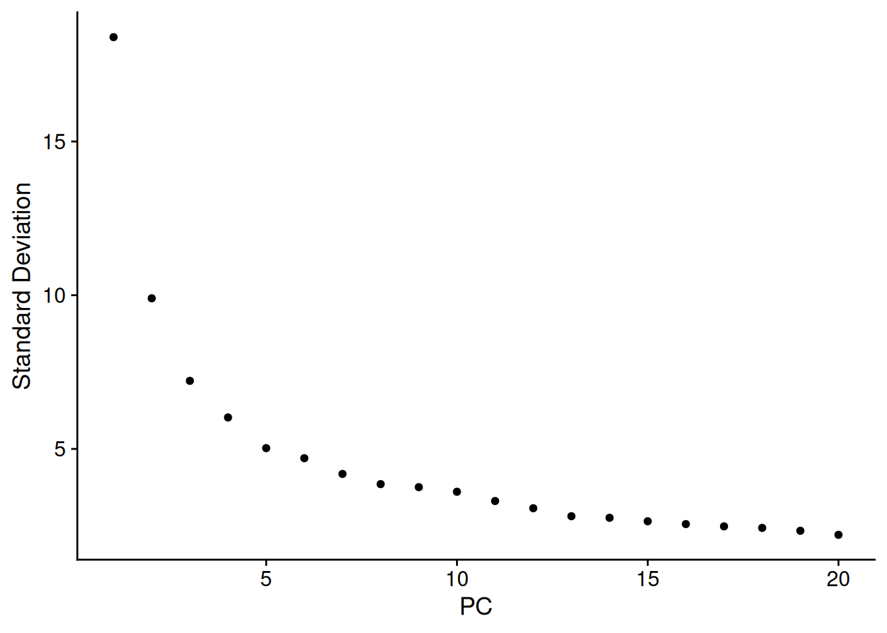
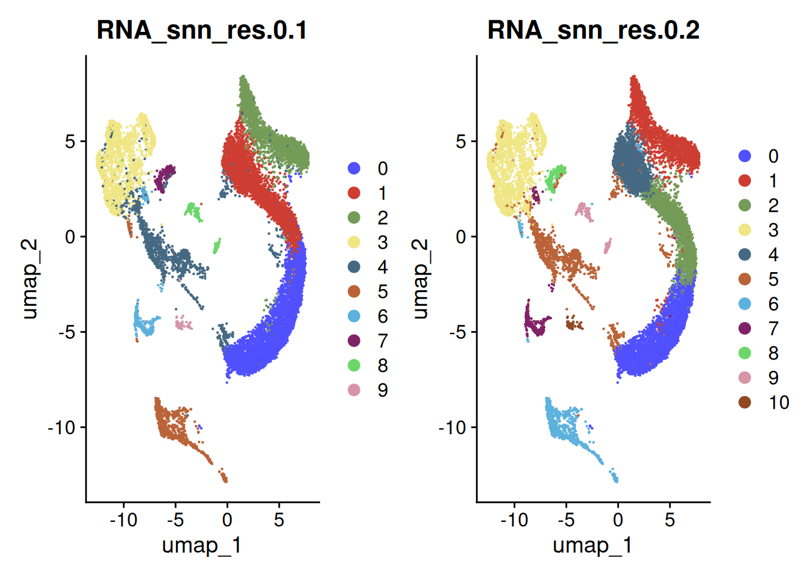
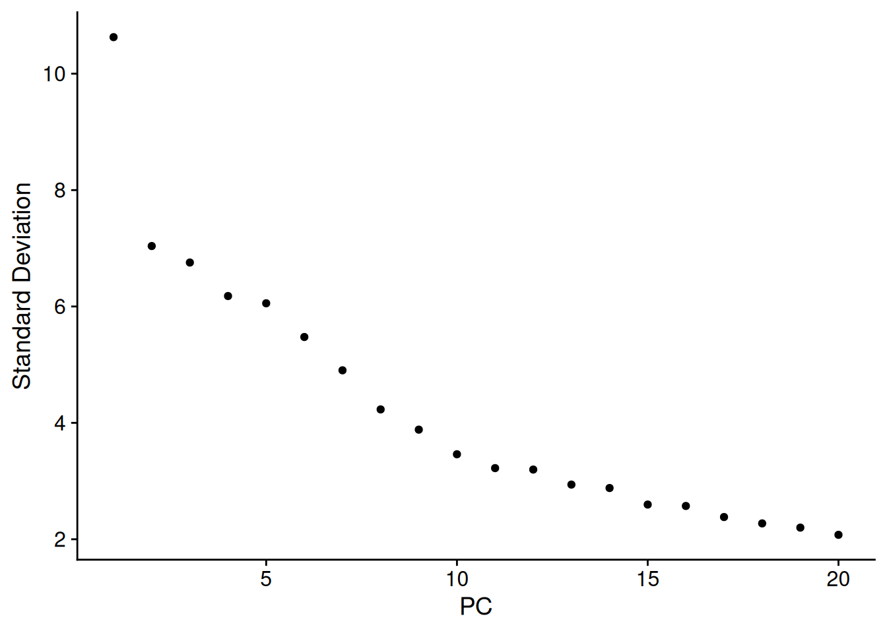
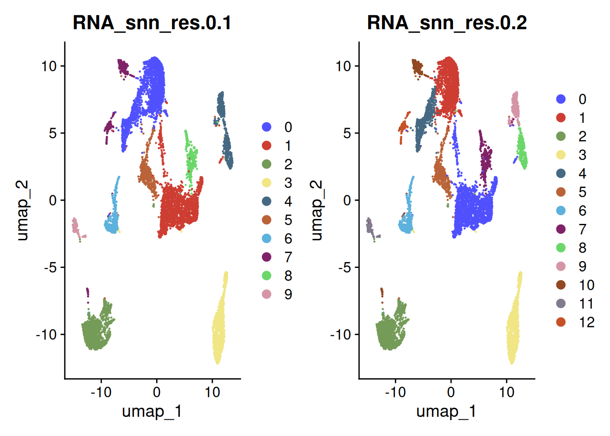
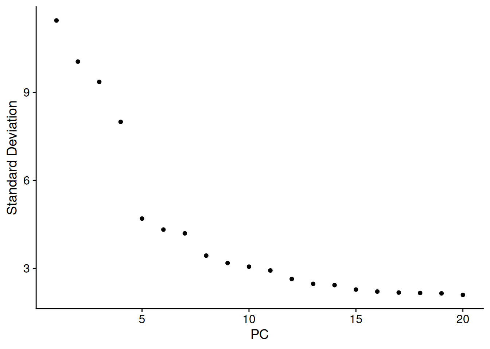
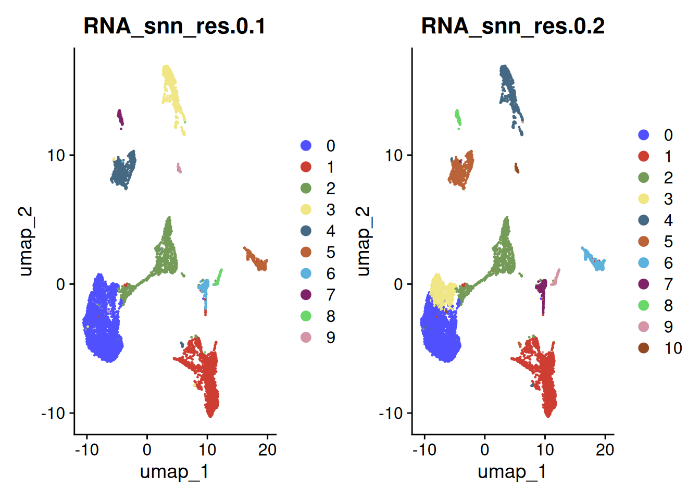
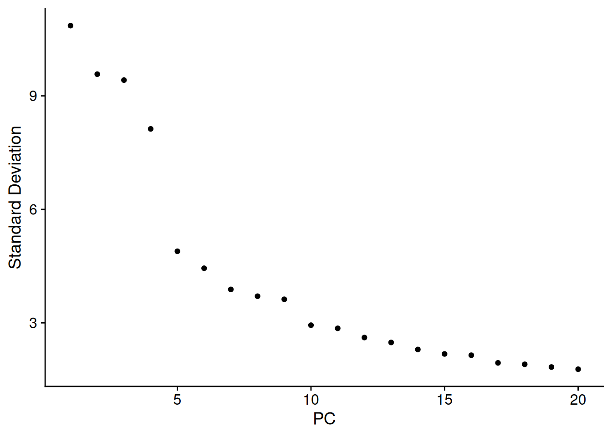
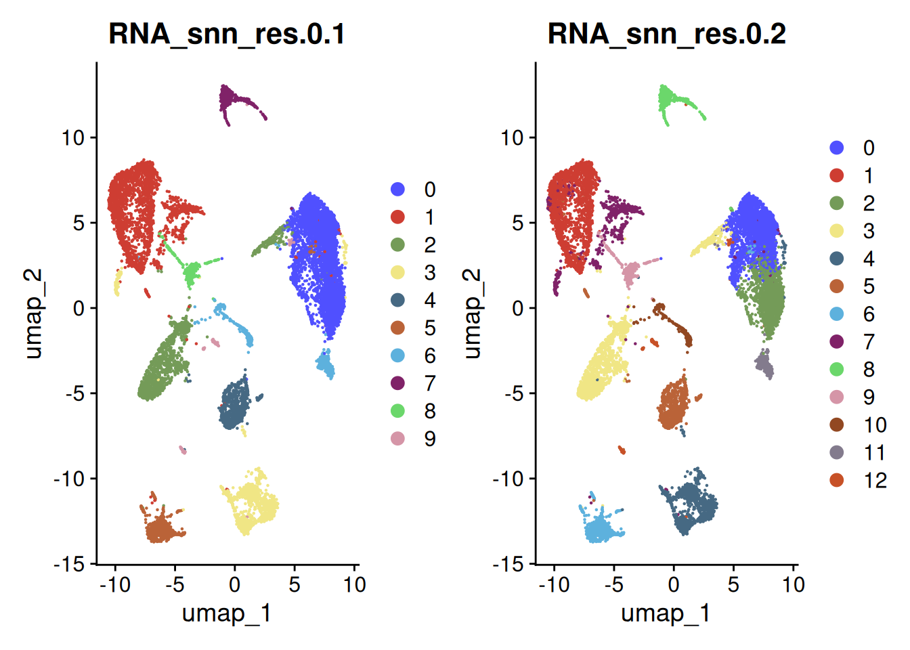

#BiocManager::install("scran")
#install.packages("VennDiagram")
#install.packages("UpSetR")1 Script Description
After quality check and control, we need to do some pre-processing for the single cell data, this processing including Normalization, select the Highly Variable Genes, Dimensionality reduction.
"482n1" Lung
"b16" Melanoma
"eo7711" Breast2 Load Libraries
library(here)here() starts at /home/mabdalfttah/projects/neural_circuits/3-preprocesslibrary(Seurat)Loading required package: SeuratObjectLoading required package: sp
Attaching package: 'SeuratObject'The following objects are masked from 'package:base':
intersect, tlibrary(tidyverse)── Attaching core tidyverse packages ──────────────────────── tidyverse 2.0.0 ──
✔ dplyr 1.1.4 ✔ readr 2.1.5
✔ forcats 1.0.0 ✔ stringr 1.5.1
✔ ggplot2 3.5.1 ✔ tibble 3.2.1
✔ lubridate 1.9.3 ✔ tidyr 1.3.1
✔ purrr 1.0.2 ── Conflicts ────────────────────────────────────────── tidyverse_conflicts() ──
✖ dplyr::filter() masks stats::filter()
✖ dplyr::lag() masks stats::lag()
ℹ Use the conflicted package (<http://conflicted.r-lib.org/>) to force all conflicts to become errorslibrary(DoubletFinder)
library(harmony)Loading required package: Rcpplibrary(scuttle)Loading required package: SingleCellExperiment
Loading required package: SummarizedExperiment
Loading required package: MatrixGenerics
Loading required package: matrixStats
Attaching package: 'matrixStats'
The following object is masked from 'package:dplyr':
count
Attaching package: 'MatrixGenerics'
The following objects are masked from 'package:matrixStats':
colAlls, colAnyNAs, colAnys, colAvgsPerRowSet, colCollapse,
colCounts, colCummaxs, colCummins, colCumprods, colCumsums,
colDiffs, colIQRDiffs, colIQRs, colLogSumExps, colMadDiffs,
colMads, colMaxs, colMeans2, colMedians, colMins, colOrderStats,
colProds, colQuantiles, colRanges, colRanks, colSdDiffs, colSds,
colSums2, colTabulates, colVarDiffs, colVars, colWeightedMads,
colWeightedMeans, colWeightedMedians, colWeightedSds,
colWeightedVars, rowAlls, rowAnyNAs, rowAnys, rowAvgsPerColSet,
rowCollapse, rowCounts, rowCummaxs, rowCummins, rowCumprods,
rowCumsums, rowDiffs, rowIQRDiffs, rowIQRs, rowLogSumExps,
rowMadDiffs, rowMads, rowMaxs, rowMeans2, rowMedians, rowMins,
rowOrderStats, rowProds, rowQuantiles, rowRanges, rowRanks,
rowSdDiffs, rowSds, rowSums2, rowTabulates, rowVarDiffs, rowVars,
rowWeightedMads, rowWeightedMeans, rowWeightedMedians,
rowWeightedSds, rowWeightedVars
Loading required package: GenomicRanges
Loading required package: stats4
Loading required package: BiocGenerics
Attaching package: 'BiocGenerics'
The following objects are masked from 'package:lubridate':
intersect, setdiff, union
The following objects are masked from 'package:dplyr':
combine, intersect, setdiff, union
The following object is masked from 'package:SeuratObject':
intersect
The following objects are masked from 'package:stats':
IQR, mad, sd, var, xtabs
The following objects are masked from 'package:base':
anyDuplicated, aperm, append, as.data.frame, basename, cbind,
colnames, dirname, do.call, duplicated, eval, evalq, Filter, Find,
get, grep, grepl, intersect, is.unsorted, lapply, Map, mapply,
match, mget, order, paste, pmax, pmax.int, pmin, pmin.int,
Position, rank, rbind, Reduce, rownames, sapply, setdiff, sort,
table, tapply, union, unique, unsplit, which.max, which.min
Loading required package: S4Vectors
Attaching package: 'S4Vectors'
The following objects are masked from 'package:lubridate':
second, second<-
The following objects are masked from 'package:dplyr':
first, rename
The following object is masked from 'package:tidyr':
expand
The following object is masked from 'package:utils':
findMatches
The following objects are masked from 'package:base':
expand.grid, I, unname
Loading required package: IRanges
Attaching package: 'IRanges'
The following object is masked from 'package:lubridate':
%within%
The following objects are masked from 'package:dplyr':
collapse, desc, slice
The following object is masked from 'package:purrr':
reduce
The following object is masked from 'package:sp':
%over%
Loading required package: GenomeInfoDb
Loading required package: Biobase
Welcome to Bioconductor
Vignettes contain introductory material; view with
'browseVignettes()'. To cite Bioconductor, see
'citation("Biobase")', and for packages 'citation("pkgname")'.
Attaching package: 'Biobase'
The following object is masked from 'package:MatrixGenerics':
rowMedians
The following objects are masked from 'package:matrixStats':
anyMissing, rowMedians
Attaching package: 'SummarizedExperiment'
The following object is masked from 'package:Seurat':
Assays
The following object is masked from 'package:SeuratObject':
Assayslibrary(scater)
library(scCustomize)scCustomize v2.1.2
If you find the scCustomize useful please cite.
See 'samuel-marsh.github.io/scCustomize/articles/FAQ.html' for citation info.library(SCpubr)
── SCpubr 2.0.2 ────────────────────────────────────────────────────────────────
ℹ Have a look at extensive tutorials in SCpubr's book.
✔ If you use SCpubr in your research, please cite it accordingly.
★ If the package is useful to you, consider leaving a Star in the GitHub repository.
! Keep track of the package updates on Twitter (@Enblacar) or in the Official NEWS website.
♥ Happy plotting!
── Tips! ──
ℹ To remove the white and black end from continuous palettes, use: options("SCpubr.ColorPaletteEnds" = FALSE)
✖ To suppress this startup message, use: suppressPackageStartupMessages(library(SCpubr))
✖ Alternatively, you can also set the following option: options("SCpubr.verbose" = FALSE)
And then load the package normally (and faster) as: library(SCpubr)
────────────────────────────────────────────────────────────────────────────────library(ggsci)
library(scrubletR)
library(qs)qs 0.26.3library(infercnv)
library(reticulate)
library(scran)3 Load Objects
path <- "/home/mabdalfttah/projects/neural_circuits/"seurat_list <- "{path}/2-qc/objects/se_list_qc.qs" %>%
glue::glue() %>%
here::here() %>%
qread(.)
seurat_list$`482n1`
An object of class Seurat
16974 features across 7557 samples within 1 assay
Active assay: RNA (16974 features, 0 variable features)
1 layer present: counts
$b16
An object of class Seurat
16974 features across 14493 samples within 1 assay
Active assay: RNA (16974 features, 0 variable features)
1 layer present: counts
$eo7711
An object of class Seurat
16974 features across 9350 samples within 1 assay
Active assay: RNA (16974 features, 0 variable features)
1 layer present: counts
$sham
An object of class Seurat
16974 features across 7849 samples within 1 assay
Active assay: RNA (16974 features, 0 variable features)
1 layer present: counts
$wt
An object of class Seurat
16974 features across 11625 samples within 1 assay
Active assay: RNA (16974 features, 0 variable features)
1 layer present: counts4 Normalization
seurat_list <- lapply(X = seurat_list,FUN = function(obj){
NormalizeData(obj)
})Normalizing layer: counts
Normalizing layer: counts
Normalizing layer: counts
Normalizing layer: counts
Normalizing layer: counts5 Highly Variable Genes
In this step, we don’t use Seurat default method, which is vst method, but we use modelgenvar from Scater package!
5.1 How It Works:
Total Variation: First, you calculate how much the gene’s expression varies overall across all cells. This gives you the “total observed variation.”
Estimate the Technical Component:
You then estimate how much of this variation is likely due to noise or technical factors (the technical component).
This estimation is based on the general trend that genes with higher expression levels tend to have more variation simply due to technical reasons, not because of biology.
Calculate Biological Variation:
Now, you subtract the estimated technical component from the total observed variation.
What’s left after this subtraction is the biological variation. This is the part of the variation that is likely due to real biological differences between the cells.
5.2 Summary:
Total Observed Variation: The total amount of variation you see in gene expression across cells.
Technical Component: The part of this variation that is just noise or errors.
Biological Variation: The part of the variation that is meaningful and due to real biological differences.
5.2.1 Interpretation:
mean: The average expression level of each gene.
total: The total observed variance of each gene.
tech: The variance expected due to technical noise (the technical component).
bio: The variance remaining after subtracting the technical component from the total variance (the biological variation).
sce_list <- lapply(seurat_list, function(obj) {
as.SingleCellExperiment(obj)
})Warning: Layer 'scale.data' is empty
Layer 'scale.data' is empty
Layer 'scale.data' is empty
Layer 'scale.data' is empty
Layer 'scale.data' is empty# Initialize a list to store HVG results
hvg_list <- list()
# Loop over each patient's SCE and calculate HVGs
for (model in names(sce_list)) {
cat("Processing model:", model, "\n")
SCE_model <- sce_list[[model]]
HVG_model <- modelGeneVar(SCE_model)
HVG_model <- getTopHVGs(stats = HVG_model, fdr.threshold = 0.01,n = 2000)
hvg_list[[model]] <- HVG_model
}Processing model: 482n1
Processing model: b16
Processing model: eo7711
Processing model: sham
Processing model: wt # Example: Inspect HVGs for the first patient
print(hvg_list[[1]]) [1] "Apoe" "Cd74" "Ctss" "C1qa" "C1qb"
[6] "Snhg11" "Apod" "H2-Ab1" "S100a8" "Il1b"
[11] "S100a9" "Trf" "H2-Eb1" "Thbs1" "Tgfbi"
[16] "Srgn" "Plp1" "H2-Aa" "C4b" "Hexb"
[21] "Ctsc" "Csf1r" "Fn1" "Ly6a" "Vim"
[26] "Slfn4" "C1qc" "Arg1" "Mxd1" "Plac8"
[31] "Mobp" "Cldn11" "Acod1" "Ccl5" "Serpina3n"
[36] "Csf3r" "Sparc" "Cebpb" "Cd14" "Lyz2"
[41] "Cxcl2" "Nrgn" "Mag" "C3" "Hdc"
[46] "Mbp" "Tgm2" "Spp1" "Sell" "Ifitm1"
[51] "Clec4d" "Slc17a7" "Tnfaip2" "Cxcr2" "Lgals3"
[56] "Ccl4" "Pla2g7" "Il1rn" "Cfb" "Ier3"
[61] "Cxcl10" "Gfap" "Adam8" "Hcar2" "Atp1a2"
[66] "Car2" "Plaur" "Ccr1" "Enpp2" "Slpi"
[71] "Fcrls" "Atp1b2" "Ccl3" "Clu" "Il1r2"
[76] "Clec4e" "Emilin2" "Klk6" "Slc1a3" "Marcksl1"
[81] "Rab44" "Gzmb" "Dusp1" "Gpr37l1" "Cnp"
[86] "Mmp9" "Cstdc4" "Ccr2" "Plbd1" "Slfn1"
[91] "Ccl12" "Ly6i" "Il2rb" "Fpr2" "Rsad2"
[96] "Mog" "Col6a1" "Jaml" "AA467197" "Fos"
[101] "Ugt8a" "Cytip" "Mal" "Id3" "Btg2"
[106] "Ms4a4a" "Antxr2" "Osm" "Inhba" "Pllp"
[111] "S100a4" "Mt2" "Igfbp2" "Stx11" "Ptgs2"
[116] "Mcemp1" "Ptgds" "Hp" "Ccrl2" "Gzma"
[121] "Dusp5" "G0s2" "Arg2" "Clec4n" "Ppp1r3b"
[126] "Cxcl9" "F10" "Nos2" "Gja1" "Slc6a1"
[131] "Ccl6" "Aqp4" "Nkg7" "Trim30b" "Ermn"
[136] "Il1f9" "Tspan2" "Cxcr4" "Bgn" "Lsp1"
[141] "Asprv1" "Cryab" "Col5a1" "Ets1" "Plpp3"
[146] "Bcan" "Tarm1" "Sh2d3c" "Id1" "Tnfrsf9"
[151] "Slc38a3" "Sox10" "Chil3" "Myrf" "Plxnb3"
[156] "Upp1" "Hapln2" "Gpr17" "Wfdc17" "Gimap3"
[161] "Cd80" "Ccn2" "Lcn2" "Gimap4" "Hepacam"
[166] "Retnlg" "Ccn1" "Ptprz1" "Timp3" "Cdkn2a"
[171] "Igfbp7" "Mefv" "Fa2h" "Bcas1" "Slc7a11"
[176] "Efnb3" "Ltb4r1" "Cd300ld" "Egln3" "Gbp2b"
[181] "Cxcl5" "Il18rap" "Klf2" "Npy" "Ms4a4b"
[186] "Tnfrsf26" "Mrc1" "Gjc3" "Sh2d2a" "Tmem88b"
[191] "Trem1" "Ctla2a" "Fam107a" "Ppp1r14a" "Ltb"
[196] "Sept1" "Gpr132" "Spn" "Sec14l5" "Cmtm5"
[201] "F3" "Trac" "Anxa1" "Mmp8" "Fpr1"
[206] "S1pr1" "Aqp9" "Il33" "Sst" "Tnc"
[211] "Itk" "Tnfrsf18" "Chil1" "Trbc1" "Gjc2"
[216] "Cd3e" "Cxcl14" "Cd2" "Gpr37" "Fxyd1"
[221] "Acap1" "Tm4sf1" "Mlc1" "Vcan" "Gpnmb"
[226] "Tgm1" "Saa3" "Opalin" "Gjb1" "Igfbp3"
[231] "Ptpn22" "Gimap8" "Icos" "Il7r" "Trdc"
[236] "Cd3d" "Matn4" "Pglyrp1" "Klrk1" "Ctsw"
[241] "Mmp13" "Nkx6-2" "Prf1" "Fgfr3" "Lat"
[246] "Sgms2" "Tbc1d10c" "Stat4" "Gimap6" "Cldn5"
[251] "Nfe2" "Pdgfra" "Pvalb" "Penk" "Lhfpl3"
[256] "Gad1" "Ccn5" "Cxcr1" "Lck" "Il18r1"
[261] "Cd3g" "Rdh12" "Ptprcap" "Cd93" "Pdcd1"
[266] "A2m" "Bmp2" "Cass4" "Pilrb1" "Zap70"
[271] "Ikzf3" "Ifitm6" "S1pr4" "Trbc2" "Cd247"
[276] "Rgs1" "Rnf125" "Klrd1" "Gimap1" "Slc7a10"
[281] "Olr1" "C1ql1" "Gjb6" "Atp2a3" "Cd4"
[286] "Tril" "Col20a1" "Ccl24" "Mmp12" "Wfdc21"
[291] "Ccl8" "Nlrp12" "Cxcl13" "Adarb2" "Lrg1"
[296] "Cxcr6" "Neu4" "Skap1" "Adgrl4" "Emid1"
[301] "Txk" "Col1a2" "Aspg" "Mctp2" "Ffar2"
[306] "Alox5" "Dhrs9" "Ramp3" "Cd163l1" "Dynap"
[311] "Vtn" "Ccr7" "Cd8b1" "Ctla4" "Slco1c1"
[316] "Cped1" "Cxcl3" "Osgin1" "Krt8" "S1pr3"
[321] "Car8" "Vip" "Grin2c" "Rasip1" "Clic5"
[326] "Plin4" "Il2ra" "Mcpt8" "Grap2" "F5"
[331] "P2ry10" "Cd177" "Sod3" "Crispld2" "Itm2a"
[336] "Thbs4" "Tnfrsf4" "Mgam" "Klre1" "Cxcr3"
[341] "Cd8a" "Fasl" "Ifit1bl2" "Rarres2" "Pthlh"
[346] "Clec1a" "Lef1" "Gata2" "Klrb1c" "Mpzl2"
[351] "Rufy4" "Ifng" "Il4i1" "Nts" "Cxcl12"
[356] "Steap4" "Itih3" "Tbx21" "Il12rb2" "Npas1"
[361] "Cacng4" "Cd5" "Mgp" "Gem" "Ankrd66"
[366] "Cd200r3" "Ncr1" "Ankrd22" "Lax1" "Fgfr4"
[371] "Trem3" "Slco1a4" "Rgs5" "Adgrg3" "Klrc1"
[376] "Pi16" "Gimap7" "Pglyrp2" "Mapk13" "Foxp3"
[381] "Padi4" "Col1a1" "Thbd" "Cmah" "Ccr4"
[386] "Il27ra" "Adora2a" "Mroh3" "Lilra6" "Rorc"
[391] "Klra4" "Xcl1" "Klra8" "Sh2d1a" "Acer2"
[396] "Cd27" "Cd7" "Slc6a20a" "Adamts14" "Acta2"
[401] "Eln" "Cd28" "Tcrg-V6" "Myb" "Blk"
[406] "Themis" "Mgl2" "Il1rl1" "Csta2" "Klri2"
[411] "Lrrc32" "Tac2" "Itgae" "Sytl3" "Spatc1"
[416] "Clec12b" "Igkc" "Ubash3a" "Klrb1f" "Il6"
[421] "Vwf" "Col3a1" "Vnn3" "Ly6d" "Eomes"
[426] "Ccl22" "Slc6a13" "Igfbpl1" "Aqp3" "Cd226"
[431] "Klra7" "Cldn1" "Gstp3" "Cyyr1" "Ccr8"
[436] "Clec10a" "Ly6g" "Tac1" "Atp13a5" "Sntb1"
[441] "Tmem252" "Tcrg-C4" "Dcn" "Cldnd2" "Gzmc"
[446] "Olfm4" "Slc22a8" "Trbv1" "Tacstd2" "Frmd7"
[451] "Lta" "Izumo1r" "Ptx3" "Trbv19" "Ccr6"
[456] "Rbpjl" "Ltf" "Ms4a2" "Ccl17" "Clnk"
[461] "Fcrla" "Eya2" "Sfrp2" "Trbv12-2" "Ngp"
[466] "Cd96" "Sox17" "Mrgpra2a" "Ibsp" "Dlk1"
[471] "Cxcr5" "Spib" "Dnah8" "Mcpt2" "Plet1"
[476] "Gzmk" "St6galnac2" "Ccr3" "Tcrg-C1" "Il13"
[481] "Grm6" "Igf2" "Unc5cl" "Srarp" "Csta3"
[486] "Aldh1a2" "Stfa2" "Ttn" "Zic1" "Timd4"
[491] "Slc6a12" "Tcrg-C2" "Scin" "Tas2r126" "Slc38a5"
[496] "Clec4b2" "Cd40lg" "Klrb1a" "Btnl2" "Smim5"
[501] "Olfr60" "Depp1" "Klri1" "Prss34" "Gdf15"
[506] "Mcpt1" "Cd19" "Tg" "Ptgir" "Ccr9"
[511] "Fcer1a" "Il23r" "Plekhs1" "Cd79a" "Trbv16"
[516] "Cd209a" "Trbv31" "Tas2r135" "Acpp" "Tpsb2"
[521] "Trbv17" "Trbv14" "Tnxb" "Ccdc146" "Krt83"
[526] "Prokr2" "Ccdc63" "Cma1" "Trbv4" "Kcnh8"
[531] "Trbv12-1" "Crh" "Htr3a" "Il10" "Higd1b"
[536] "Klrg1" "Stfa1" "Mzb1" "Tas2r143" "Trbv2"
[541] "Cpa3" "Igha" "Il17a" "Enthd1" "Ripor3"
[546] "Ms4a1" "Cd160" "Trbv20" "Trbv3" "Dcstamp"
[551] "Irgc1" "Lum" "Pax5" "Mrgpra6" "Ighg2b"
[556] "F2rl1" "Hrh4" "Lin28a" "Gpr141b" "Tmem255b"
[561] "Slc13a4" "Th" "Trbv5" "Qprt" "Myoc"
[566] "Trbv26" "Il4" "Cd300c" "Cd209c" "Pou2af1"
[571] "Camp" "Crtam" "Col8a2" "Draxin" "Tafa4"
[576] "Slc22a6" "Zic4" "Clca3a2" "Serpinb9b" "C1qtnf9"
[581] "Khdc1a" "Aox3" "Rln3" "Fcmr" "Ccl1"
[586] "Klk1" "Fmo2" "Trbv29" "Mcpt4" "Ccdc153"
[591] "Tpsab1" "Lgals7" "Pglyrp4" "Tph1" "Sele"
[596] "Fam180a" "Stfa3" "Iglc1" "Klra6" "Muc20"
[601] "Trbv13-1" "Tfap2b" "Havcr1" "Dntt" "Lhx1"
[606] "Sh2d1b2" "Itgb2l" "Gja5" "Trbv13-3" "Gata1"
[611] "H2-Q1" "Tmem52b" "Khdc1c" "Gsdmc4" "Art2b"
[616] "Bmx" "Foxc2" "Slc22a20" "Tex33" "Fpr3"
[621] "Sox3" "Fcrl6" "Gzmf" "Spag16" "Ugt1a10"
[626] "Actg2" "Fcrl5" "Ofcc1" "Klra3" "Ctsg"
[631] "Csrp3" "Itih4" "Tpsg1" "Tmprss3" "Spata31d1b"
[636] "Krt73" "Proz" "Adam30" "Ugt1a9" "Il1f6"
[641] "Pinlyp" "Chil6" "Dnase2b" "Lamp3" "Csf3"
[646] "Gstt4" "Khdc1b" "Tcrg-V4" "Trp63" "Chrna3"
[651] "Prok2" "Hemgn" "Krt86" "Clec2e" "Armc12"
[656] "Acsbg2" "Adamts19" "Smgc" "Cxcl17" "St6galnac1"
[661] "Ttll6" "Tmprss6" "Zp3" "Pabpc6" "Hoxb6"
[666] "Sp5" "Ccdc38" "Aldh3b3" "Tfpi2" "Cps1"
[671] "Six2" "Trim43b" "Rgs9bp" "Il21" "Tmsb15a"
[676] "Zfp663" "Ugt1a8" "Vmn2r19" "Tmem54" "Ankar"
[681] "Oas1e" "Psmb11" "Hsd17b2" "Tmigd1" "Oosp1"
[686] "Pmp2" "Foxd4" "Tas1r2" "Myod1" "Asic5"
[691] "Pin1rt1" "Mmp7" "Prps1l1" "Ceacam20" "Taf7l2"
[696] "Hoxc10" "Oosp2" "Hcar1" "Nps" "Fabp1"
[701] "Ces2g" "Igkv2-137" "Myocos" "Pate7" "Dkk4"
[706] "Prl3c1" "Pigr" "a" "Cyp17a1" "Lyg1"
[711] "Igfbp1" "Slc12a1" "Ccdc175" "Gnat1" "Clrn2"
[716] "Dppa4" "Cyp2c65" "Tlx2" "Klk13" "Cnga1"
[721] "Glb1l3" "Cd209b" 5.2.2 Add the HVG to Seurat object!
for (i in seq_along(seurat_list)) {
VariableFeatures(seurat_list[[i]]) <- hvg_list[[i]]
}6 Pre-processing
seurat_list <- lapply(seurat_list, function(obj){
mouse_name <- unique(obj$orig.ident)
cat("\n==========================================\n")
cat("Processing mouse:", mouse_name, "\n")
cat("==========================================\n")
all.genes <- rownames(obj)
obj <- ScaleData(obj, features = all.genes)
obj <- RunPCA(obj, features = VariableFeatures(object = obj))
print(names(obj))
print(obj[["pca"]], dims = 1:5, nfeatures = 5)
print(ElbowPlot(obj))
obj <- FindNeighbors(obj, dims = 1:15)
obj <- FindClusters(obj, resolution = c(0.1, 0.2))
obj <- RunUMAP(obj, dims = 1:15)
print(DimPlot(obj, reduction = "umap",
group.by = c("RNA_snn_res.0.1","RNA_snn_res.0.2"),
cols = ggsci::pal_igv()(50)))
return(obj)
})
==========================================
Processing mouse: 1
==========================================Centering and scaling data matrixPC_ 1
Positive: Srgn, Il1b, Cebpb, Clec4d, Csf3r, Mxd1, Tnfaip2, Acod1, Slfn4, Ccr1
Cxcr2, Cd14, S100a8, Hdc, Il1rn, Ier3, Plaur, Adam8, S100a9, Clec4e
Cxcl2, Sell, Ifitm1, Thbs1, Il1r2, Slpi, Fpr2, Slfn1, Tgm2, Rab44
Negative: Enpp2, Plp1, Serpina3n, Cldn11, Mag, Ugt8a, Mog, Pllp, Car2, Apod
Myrf, Mal, Mobp, Cryab, Cmtm5, Sox10, Hepacam, Tmem88b, Efnb3, Fa2h
Tspan2, Ermn, C4b, Gpr37, Gjc2, Mbp, Ppp1r14a, Gjb1, Plxnb3, Gjc3
PC_ 2
Positive: Il2rb, Gimap4, Sh2d2a, Gimap3, Sept1, Nkg7, Ms4a4b, Gzmb, Spn, Cd3e
Cd3d, Ets1, Cd2, Trbc1, Ptprcap, Lat, Itk, Trac, Gimap8, Cd247
Ptpn22, Lck, Cd3g, Ctsw, Zap70, Gimap6, Ikzf3, Ctla2a, Gimap1, Trbc2
Negative: C4b, Trf, Plp1, Csf3r, Cebpb, Cldn11, Mag, Il1b, Pla2g7, Serpina3n
Tnfaip2, Mog, Enpp2, Apod, Myrf, Cd14, Ugt8a, Clec4d, Acod1, Mobp
Tmem88b, Fa2h, Cmtm5, Mal, Pllp, Tspan2, Gpr37, Slfn4, Cryab, C3
PC_ 3
Positive: Ctsc, Csf1r, C1qb, C1qc, C1qa, Hexb, Ctss, Apoe, Cfb, Snhg11
Cd74, H2-Ab1, H2-Eb1, H2-Aa, Slc17a7, Fcrls, Fn1, Ccl12, Ly6a, Sparc
Nrgn, Lyz2, Ccl5, Clu, Tgfbi, Arg1, Gbp2b, Gja1, Ms4a4a, Col5a1
Negative: Cldn11, Mag, Mog, Plp1, Myrf, Mal, Car2, Ugt8a, Fa2h, Ermn
Gjc2, Apod, Tmem88b, Tspan2, Gjb1, Gpr37, Ppp1r14a, Nkx6-2, Efnb3, Pllp
Mobp, Hapln2, Sec14l5, Klk6, Sox10, Opalin, Mbp, Enpp2, Cmtm5, Plxnb3
PC_ 4
Positive: Atp1a2, Slc38a3, Aqp4, Gja1, Mlc1, Gpr37l1, Plpp3, Fgfr3, Slc1a3, A2m
Timp3, Atp1b2, Igfbp2, Sod3, Clu, Tril, S1pr1, Gjb6, Id3, Slco1c1
Igfbp7, Gfap, Ccn1, Rarres2, F3, Fam107a, S1pr3, Ptprz1, Slc7a10, Mt2
Negative: Csf1r, Ctss, Ctsc, C1qb, Cd74, Cfb, C1qa, C1qc, H2-Ab1, H2-Aa
H2-Eb1, Lyz2, Hexb, Tgfbi, Ccl5, Arg1, Ms4a4a, Trf, Ly6a, Ccr2
Ly6i, Ccl12, Plac8, Fcrls, F10, Mag, Chil3, AA467197, Mrc1, Lgals3
PC_ 5
Positive: H2-Ab1, Cd74, Ctsc, H2-Aa, H2-Eb1, Tgfbi, Ly6a, Cfb, Apoe, Arg1
Ctss, Ms4a4a, Lyz2, Vim, C3, Lgals3, Csf1r, Ccl5, Ccr2, AA467197
Tgm2, Ly6i, Plac8, Pla2g7, F10, Fn1, C1qb, C4b, Trf, Chil3
Negative: Snhg11, Slc17a7, Nrgn, S100a9, S100a8, Hdc, Cxcr2, Col6a1, Gad1, Cxcl2
Col5a1, Mmp9, Asprv1, Cstdc4, G0s2, Il1f9, Retnlg, Sh2d3c, Dusp1, Pvalb
Slpi, Npy, Adarb2, Rab44, Il1r2, Nlrp12, Wfdc21, Cxcr1, Ccl4, Dhrs9 [1] "RNA" "pca"
PC_ 1
Positive: Srgn, Il1b, Cebpb, Clec4d, Csf3r
Negative: Enpp2, Plp1, Serpina3n, Cldn11, Mag
PC_ 2
Positive: Il2rb, Gimap4, Sh2d2a, Gimap3, Sept1
Negative: C4b, Trf, Plp1, Csf3r, Cebpb
PC_ 3
Positive: Ctsc, Csf1r, C1qb, C1qc, C1qa
Negative: Cldn11, Mag, Mog, Plp1, Myrf
PC_ 4
Positive: Atp1a2, Slc38a3, Aqp4, Gja1, Mlc1
Negative: Csf1r, Ctss, Ctsc, C1qb, Cd74
PC_ 5
Positive: H2-Ab1, Cd74, Ctsc, H2-Aa, H2-Eb1
Negative: Snhg11, Slc17a7, Nrgn, S100a9, S100a8 
Computing nearest neighbor graphComputing SNNModularity Optimizer version 1.3.0 by Ludo Waltman and Nees Jan van Eck
Number of nodes: 7557
Number of edges: 263364
Running Louvain algorithm...
Maximum modularity in 10 random starts: 0.9788
Number of communities: 11
Elapsed time: 0 seconds
Modularity Optimizer version 1.3.0 by Ludo Waltman and Nees Jan van Eck
Number of nodes: 7557
Number of edges: 263364
Running Louvain algorithm...
Maximum modularity in 10 random starts: 0.9663
Number of communities: 13
Elapsed time: 0 secondsWarning: The default method for RunUMAP has changed from calling Python UMAP via reticulate to the R-native UWOT using the cosine metric
To use Python UMAP via reticulate, set umap.method to 'umap-learn' and metric to 'correlation'
This message will be shown once per session18:01:40 UMAP embedding parameters a = 0.9922 b = 1.11218:01:40 Read 7557 rows and found 15 numeric columns18:01:40 Using Annoy for neighbor search, n_neighbors = 3018:01:40 Building Annoy index with metric = cosine, n_trees = 500% 10 20 30 40 50 60 70 80 90 100%[----|----|----|----|----|----|----|----|----|----|**************************************************|
18:01:42 Writing NN index file to temp file /tmp/Rtmp8CMeu7/file6dc194f2fe4b5
18:01:42 Searching Annoy index using 1 thread, search_k = 3000
18:01:45 Annoy recall = 100%
18:01:46 Commencing smooth kNN distance calibration using 1 thread with target n_neighbors = 30
18:01:48 Initializing from normalized Laplacian + noise (using RSpectra)
18:01:48 Commencing optimization for 500 epochs, with 330374 positive edges
18:01:59 Optimization finished
==========================================
Processing mouse: 2
==========================================Centering and scaling data matrix
PC_ 1
Positive: Gpnmb, Carmil2, Bace2, Vat1, Mcm2, Gjb2, Mgarp, Tinagl1, Gstp1, Rrm2
Lmnb1, Mki67, Cdk1, Mcm6, Mthfd2, Top2a, Uhrf1, Mt2, Tk1, Racgap1
Anln, Ccna2, Gsta4, Tpx2, Myc, Kif11, Tpi1, Ube2c, Cdca2, Kif23
Negative: Cx3cl1, Atp1b1, Kalrn, Grin1, Adgrb1, Rtn1, Atp2b2, Gria2, Syp, Snhg11
Snrpn, Olfm1, Syt1, Mical2, Arpp21, Snap25, Grin2b, Thy1, Slc17a7, Ndrg4
Ptprn, Grin2a, Dnm1, Kcnq2, Nrgn, Eef1a2, Phf24, Rnf112, Tmem59l, Camk2a
PC_ 2
Positive: Carmil2, Gpnmb, Bace2, Mgarp, Gjb2, Mcm2, Asns, Vat1, Rrm2, Gstp1
Tinagl1, Tpi1, Gsta4, Cdk1, Mt2, Racgap1, Anln, Tk1, Mki67, Mthfd2
Top2a, Uhrf1, Ccna2, Tpx2, Lmnb1, Mcm6, Cdca2, Kif11, Ube2c, Hist1h1e
Negative: Laptm5, Ctss, Mpeg1, Csf1r, Tyrobp, C1qb, C1qa, C1qc, Pld4, Ly86
Itgam, Fcgr3, Fcer1g, Fcrls, Cd53, Vsir, Ctsh, Unc93b1, Inpp5d, Selplg
Nckap1l, Itgb5, Cyth4, Aif1, Cd68, Trem2, Hexb, Lair1, Pik3ap1, Itgb2
PC_ 3
Positive: R3hdm1, Gpnmb, Carmil2, Snhg11, Kcnk9, Baiap2, Ryr2, Rnf112, Madd, Mgarp
Celsr3, Kctd16, Scn8a, Igsf9b, Bace2, Mcm2, Grin2a, Matk, Kcnh1, Vwa5b2
Coro1a, Rrm2, Mki67, Cdk1, Rgs11, Lmnb1, Phf24, Nrg3, Racgap1, Grin2b
Negative: Kcnj10, Hepacam, Car2, Atp1a2, Slc1a3, Gprc5b, Gpr37l1, Glul, Plpp3, Htra1
Wscd1, Gja1, Bcan, Mobp, S100a16, Pllp, Aqp4, Cldn11, Mlc1, Mal
Ptprz1, Fgfr3, Plp1, Slc38a3, Fam107a, Fgfr2, Plekhb1, Mog, Cnp, Gjb6
PC_ 4
Positive: Atp1a2, Gja1, Gpr37l1, Slc1a3, Fgfr3, Mlc1, Gjb6, Slc38a3, Slc6a11, Aqp4
S1pr1, Clu, Atp1b2, Plpp3, Cldn10, Tril, Fam107a, Aldoc, Bcan, Ptprz1
Slc25a18, Slco1c1, Slc39a12, Slc1a2, Ndrg2, Luzp2, Grin2c, Cxcl14, Htra1, Gpc5
Negative: Mog, Cldn11, Myrf, Tmem88b, Fa2h, Mal, Hapln2, Ermn, Gjb1, Ugt8a
Plp1, Tspan2, Gjc2, Apod, Nkx6-2, Plxnb3, Ppp1r14a, Efnb3, Sec14l5, Opalin
Galnt6, Cntn2, Pllp, Cnp, Aspa, S1pr5, Tmem125, Gatm, Tmeff2, Phldb1
PC_ 5
Positive: Nrsn1, Nefl, Ncdn, Ppp1r9b, Camk2n2, Camk2n1, Kif5a, Kif5c, Jph3, Cplx1
Zfp365, Sncb, Hpca, Prkar1b, Rgs4, Scrt1, Map1a, Golga7b, Hlf, Eef1a2
Rab3a, Vsnl1, Cdk5r2, Ncs1, Epop, Nrgn, Ddn, Snap25, Tspyl4, Mbp
Negative: Igfbp7, Flt1, Adgrl4, Itm2a, Pecam1, Esam, Col4a1, Cldn5, Adgrf5, Ltbp4
Podxl, Emcn, Ptprb, Ctla2a, Vwa1, Kdr, Col4a2, Egfl7, Pltp, Ly6a
Abcb1a, Pxdn, Id1, Cxcl12, Plat, Rgs5, Sox18, Cd93, Palmd, Klf2 [1] "RNA" "pca"
PC_ 1
Positive: Gpnmb, Carmil2, Bace2, Vat1, Mcm2
Negative: Cx3cl1, Atp1b1, Kalrn, Grin1, Adgrb1
PC_ 2
Positive: Carmil2, Gpnmb, Bace2, Mgarp, Gjb2
Negative: Laptm5, Ctss, Mpeg1, Csf1r, Tyrobp
PC_ 3
Positive: R3hdm1, Gpnmb, Carmil2, Snhg11, Kcnk9
Negative: Kcnj10, Hepacam, Car2, Atp1a2, Slc1a3
PC_ 4
Positive: Atp1a2, Gja1, Gpr37l1, Slc1a3, Fgfr3
Negative: Mog, Cldn11, Myrf, Tmem88b, Fa2h
PC_ 5
Positive: Nrsn1, Nefl, Ncdn, Ppp1r9b, Camk2n2
Negative: Igfbp7, Flt1, Adgrl4, Itm2a, Pecam1 
Computing nearest neighbor graph
Computing SNNModularity Optimizer version 1.3.0 by Ludo Waltman and Nees Jan van Eck
Number of nodes: 14493
Number of edges: 517574
Running Louvain algorithm...
Maximum modularity in 10 random starts: 0.9660
Number of communities: 10
Elapsed time: 1 seconds
Modularity Optimizer version 1.3.0 by Ludo Waltman and Nees Jan van Eck
Number of nodes: 14493
Number of edges: 517574
Running Louvain algorithm...
Maximum modularity in 10 random starts: 0.9497
Number of communities: 11
Elapsed time: 2 seconds18:03:08 UMAP embedding parameters a = 0.9922 b = 1.112
18:03:08 Read 14493 rows and found 15 numeric columns
18:03:08 Using Annoy for neighbor search, n_neighbors = 30
18:03:08 Building Annoy index with metric = cosine, n_trees = 50
0% 10 20 30 40 50 60 70 80 90 100%
[----|----|----|----|----|----|----|----|----|----|
**************************************************|
18:03:14 Writing NN index file to temp file /tmp/Rtmp8CMeu7/file6dc1978040c4a
18:03:14 Searching Annoy index using 1 thread, search_k = 3000
18:03:21 Annoy recall = 100%
18:03:23 Commencing smooth kNN distance calibration using 1 thread with target n_neighbors = 30
18:03:25 Initializing from normalized Laplacian + noise (using RSpectra)
18:03:26 Commencing optimization for 200 epochs, with 632662 positive edges
18:03:35 Optimization finished
==========================================
Processing mouse: 3
==========================================Centering and scaling data matrix
PC_ 1
Positive: Fcer1g, Srgn, Cd53, Cd52, Cebpb, Mpeg1, Slfn4, Ucp2, Slc15a3, Lilrb4a
Plek, Slfn5, Ctss, Tgfbi, Spi1, Ifi204, Lgals3, Fgl2, Slfn1, Fcgr1
Zfp36, Pirb, Themis2, Cd68, Ifi207, Slfn8, Emilin2, Itgam, Ctsc, Msrb1
Negative: Gpm6a, Aplp1, Atp1b1, Snrpn, Tspan7, Dnm1, Snap25, Gnao1, Rtn1, Eef1a2
Gria2, Pcsk1n, Atp2b2, Cx3cl1, Syt11, Ndrg4, Slc22a17, Syp, Syt1, Adgrb1
Nrgn, Dclk1, Grin1, Cadm4, Kalrn, Scn1b, Camk2a, Sncb, Slc17a7, Spock2
PC_ 2
Positive: Grin1, Grin2b, Snhg11, Syp, Cx3cl1, Grin2a, Phf24, Kalrn, Syt1, Dnm1
Chgb, Tmem59l, Slc17a7, Atp2b2, Arpp21, Rtn1, Syt13, Ryr2, Snap25, Sncb
Vsnl1, C1qtnf4, Kcnq2, Lingo1, Hpca, Slc8a2, Ndrg4, Frrs1l, AI593442, Nrgn
Negative: Cldn11, Mag, Pllp, Mal, Mog, Ugt8a, Myrf, Fa2h, Plp1, Apod
Car2, Tmem88b, Ermn, C4b, Serpina3n, Cmtm5, Gpr37, Trf, Ppp1r14a, Gjb1
Gjc2, Wscd1, Sox10, Efnb3, Tspan2, Hepacam, Plxnb3, Nkx6-2, Hapln2, Cnp
PC_ 3
Positive: Apoe, Mpeg1, Lgmn, Fcgr1, Cd68, Mafb, C3ar1, Ms4a6d, Pla2g7, Csf1r
Tgfbi, Msr1, Ctsc, Fcgr2b, Ctss, Lyz2, Aif1, Itgam, Siglec1, Cfb
Ctsh, Ms4a7, Slc11a1, Pld4, Ms4a4a, Slc15a3, Ms4a6c, Adam8, Fabp5, Cd81
Negative: Il2rb, Gimap4, Nkg7, Gimap3, Sh2d2a, Sept1, Ms4a4b, Trbc1, Ctsw, Ets1
Gzmb, Gimap8, Itk, Ptpn22, Cd2, Gzma, Lck, Gimap1, Ctla2a, Spn
Klre1, Txk, Tbc1d10c, Ptprcap, Prf1, Klrd1, Il18r1, Zap70, Klrk1, Skap1
PC_ 4
Positive: S100a8, Cxcr2, S100a9, Hdc, Il1b, Il1r2, Acod1, Csf3r, Ifitm1, Lrg1
Trem1, Mxd1, Cxcl2, Trim30b, Il1f9, Mmp9, Slpi, Cd14, Tnfaip2, Marcksl1
Rab44, Ets2, Hp, Sell, Clec4d, Arg2, Dusp1, Slfn4, Hcar2, Csf1
Negative: Apoe, Lgmn, Ctsc, Ctsh, Aif1, Hexb, C1qb, Pld4, C3ar1, Ccr5
Ly6a, C1qa, Mafb, C1qc, Ctss, Fcgr2b, Csf1r, Cxcl16, Ms4a6d, Cd72
Ly86, Siglec1, F11r, Ms4a6b, Rab3il1, Ms4a7, Cebpa, Fcgr1, Ms4a6c, Rnase4
PC_ 5
Positive: Mag, Mog, Cldn11, Fa2h, Ugt8a, Myrf, Ermn, Gjc2, Tmem88b, Gjb1
Cntn2, Efnb3, Trf, Plp1, Galnt6, Tspan2, Gpr37, Hapln2, Nkx6-2, Opalin
Enpp2, Ppp1r14a, Sec14l5, Tubb4a, Klk6, Mal, Cnp, Tmeff2, Stmn4, Aspa
Negative: Slc38a3, Slco1c1, Atp1a2, Slc1a3, Gpr37l1, Aqp4, Mlc1, Ccdc141, Fgfr3, Gja1
Sod3, Clu, Gjb6, Plpp3, Tril, Cldn5, Igfbp2, Adgrl4, Ptprb, Adgrf5
Prex2, Timp3, Rgs5, Id3, Slco1a4, Epas1, Atp1b2, Fam107a, Ntsr2, Slc4a4 [1] "RNA" "pca"
PC_ 1
Positive: Fcer1g, Srgn, Cd53, Cd52, Cebpb
Negative: Gpm6a, Aplp1, Atp1b1, Snrpn, Tspan7
PC_ 2
Positive: Grin1, Grin2b, Snhg11, Syp, Cx3cl1
Negative: Cldn11, Mag, Pllp, Mal, Mog
PC_ 3
Positive: Apoe, Mpeg1, Lgmn, Fcgr1, Cd68
Negative: Il2rb, Gimap4, Nkg7, Gimap3, Sh2d2a
PC_ 4
Positive: S100a8, Cxcr2, S100a9, Hdc, Il1b
Negative: Apoe, Lgmn, Ctsc, Ctsh, Aif1
PC_ 5
Positive: Mag, Mog, Cldn11, Fa2h, Ugt8a
Negative: Slc38a3, Slco1c1, Atp1a2, Slc1a3, Gpr37l1 
Computing nearest neighbor graph
Computing SNNModularity Optimizer version 1.3.0 by Ludo Waltman and Nees Jan van Eck
Number of nodes: 9350
Number of edges: 315745
Running Louvain algorithm...
Maximum modularity in 10 random starts: 0.9780
Number of communities: 10
Elapsed time: 0 seconds
Modularity Optimizer version 1.3.0 by Ludo Waltman and Nees Jan van Eck
Number of nodes: 9350
Number of edges: 315745
Running Louvain algorithm...
Maximum modularity in 10 random starts: 0.9658
Number of communities: 13
Elapsed time: 0 seconds18:04:15 UMAP embedding parameters a = 0.9922 b = 1.112
18:04:15 Read 9350 rows and found 15 numeric columns
18:04:15 Using Annoy for neighbor search, n_neighbors = 30
18:04:15 Building Annoy index with metric = cosine, n_trees = 50
0% 10 20 30 40 50 60 70 80 90 100%
[----|----|----|----|----|----|----|----|----|----|
**************************************************|
18:04:18 Writing NN index file to temp file /tmp/Rtmp8CMeu7/file6dc19e098db2
18:04:18 Searching Annoy index using 1 thread, search_k = 3000
18:04:21 Annoy recall = 100%
18:04:23 Commencing smooth kNN distance calibration using 1 thread with target n_neighbors = 30
18:04:24 Initializing from normalized Laplacian + noise (using RSpectra)
18:04:25 Commencing optimization for 500 epochs, with 400122 positive edges
18:04:38 Optimization finished
==========================================
Processing mouse: 4
==========================================Centering and scaling data matrix
PC_ 1
Positive: Sparc, Laptm5, Csf1r, C1qa, C1qb, Ctss, Slco2b1, Ctsh, Tgfbr2, C1qc
Mpeg1, Fcrls, Anxa3, Tyrobp, Hexb, Itgb5, Unc93b1, Vsir, F11r, Selplg
Fcer1g, P2ry12, Ly86, Adap2, Fcgr3, Siglech, Itgam, Pld4, Csf3r, B2m
Negative: Atp1b1, Snhg11, Snap25, Arpp21, Sncb, Slc17a7, Lingo1, Nrgn, Hpca, Egr1
Nptxr, Nptx1, Cck, Cplx1, Vxn, Lamp5, Nefm, Spock3, Kcnh5, Kctd13
Enc1, Lgi3, Pcp4, Enpp2, Rgs4, Scn4b, Atp2b4, Slain1, Dbndd2, Ccp110
PC_ 2
Positive: Epas1, Cldn5, Flt1, Adgrl4, Slco1a4, Adgrf5, Rgs5, Abcb1a, Ptprb, Pltp
Slco1c1, Id1, Itm2a, Slc2a1, Tek, Sox18, Fn1, Sox17, Esam, Clic4
Id3, Emcn, Cdh5, Lsr, Pecam1, Klf2, Ndrg1, Ccdc141, Cyyr1, Kdr
Negative: Csf1r, Laptm5, C1qc, Fcrls, Mpeg1, C1qb, C1qa, Ctss, Selplg, Siglech
P2ry12, Hexb, Tmem119, Csf3r, Fcgr3, Otulinl, Tyrobp, Itgam, Gpr34, Pld4
Ly86, Cd33, Trem2, Fcer1g, Cyth4, P2ry13, Cd53, Lag3, Snhg11, Unc93b1
PC_ 3
Positive: Trf, Mag, Cldn11, Plp1, Mog, Ugt8a, Cnp, Ermn, Tspan2, Tmem88b
Mal, Gpr37, Myrf, Apod, Gjc3, Plekhh1, Tmem63a, Aspa, Efnb3, Gjc2
Car2, Phldb1, Mobp, Gatm, Gjb1, Opalin, Sox10, Rrs1, Ttyh2, Ppp1r14a
Negative: Atp1b1, Snhg11, Snap25, Arpp21, Flt1, Igfbp7, Cldn5, Itm2a, Adgrl4, Slco1a4
Lingo1, Egfl7, Abcb1a, Esam, Car4, Adgrf5, Rgs5, Sncb, Slc17a7, Sox18
Nrgn, Pltp, Rgs4, Ptprb, Hpca, Slc1a2, Klf2, Tek, Egr1, Pecam1
PC_ 4
Positive: Cldn5, Adgrl4, Flt1, Abcb1a, Slco1a4, Ptprb, Adgrf5, Esam, Egfl7, Sox18
Itm2a, Ly6a, Pecam1, Rgs5, Klf2, Sox17, Tek, Emcn, Igfbp7, Kdr
Pglyrp1, Cyyr1, Foxf2, Lsr, Podxl, Slc9a3r2, Fn1, Cdh5, Eng, Rasip1
Negative: Gpr37l1, Gja1, Plpp3, Ntsr2, F3, Bcan, Fgfr3, Slc1a3, Grin2c, Gpc5
Slc7a10, Gjb6, Pla2g7, Cldn10, Slc6a11, Aqp4, Prodh, Ptprz1, Atp1a2, Mfge8
Tril, Mlc1, Nwd1, Btbd17, Cyp4f15, Slc39a12, Myorg, S1pr1, Acsbg1, Atp1b2
PC_ 5
Positive: Slc1a2, S1pr1, Gja1, Glul, Grin2c, Daam2, Ntsr2, Nrgn, Fgfr3, Fam107a
Slc17a7, Slco1c1, Prodh, Mlc1, Fnbp1, Acsbg1, Aldoc, Slc39a12, Mt1, Mt2
Cyp4f15, Cldn10, Nwd1, Aqp4, Hpca, Aldh1l1, Egr1, Gjb6, Lgi4, Selenop
Negative: Pdgfra, Matn4, Gpr17, Cspg4, Vcan, Neu4, Lhfpl3, C1ql1, Cacng4, Emid1
Myt1, Megf11, Tmem255b, Pcdh15, Sema3d, Mmp15, Traf4, Olig2, Ntn1, Sulf2
Sh3bp4, Adam12, Nxph1, Calcrl, Spon1, Tmem100, Plpp4, Smoc1, Grin3a, Inava [1] "RNA" "pca"
PC_ 1
Positive: Sparc, Laptm5, Csf1r, C1qa, C1qb
Negative: Atp1b1, Snhg11, Snap25, Arpp21, Sncb
PC_ 2
Positive: Epas1, Cldn5, Flt1, Adgrl4, Slco1a4
Negative: Csf1r, Laptm5, C1qc, Fcrls, Mpeg1
PC_ 3
Positive: Trf, Mag, Cldn11, Plp1, Mog
Negative: Atp1b1, Snhg11, Snap25, Arpp21, Flt1
PC_ 4
Positive: Cldn5, Adgrl4, Flt1, Abcb1a, Slco1a4
Negative: Gpr37l1, Gja1, Plpp3, Ntsr2, F3
PC_ 5
Positive: Slc1a2, S1pr1, Gja1, Glul, Grin2c
Negative: Pdgfra, Matn4, Gpr17, Cspg4, Vcan 
Computing nearest neighbor graph
Computing SNNModularity Optimizer version 1.3.0 by Ludo Waltman and Nees Jan van Eck
Number of nodes: 7849
Number of edges: 271134
Running Louvain algorithm...
Maximum modularity in 10 random starts: 0.9723
Number of communities: 10
Elapsed time: 0 seconds
Modularity Optimizer version 1.3.0 by Ludo Waltman and Nees Jan van Eck
Number of nodes: 7849
Number of edges: 271134
Running Louvain algorithm...
Maximum modularity in 10 random starts: 0.9529
Number of communities: 11
Elapsed time: 0 seconds18:05:14 UMAP embedding parameters a = 0.9922 b = 1.112
18:05:14 Read 7849 rows and found 15 numeric columns
18:05:14 Using Annoy for neighbor search, n_neighbors = 30
18:05:14 Building Annoy index with metric = cosine, n_trees = 50
0% 10 20 30 40 50 60 70 80 90 100%
[----|----|----|----|----|----|----|----|----|----|
**************************************************|
18:05:17 Writing NN index file to temp file /tmp/Rtmp8CMeu7/file6dc198f04956
18:05:17 Searching Annoy index using 1 thread, search_k = 3000
18:05:19 Annoy recall = 100%
18:05:20 Commencing smooth kNN distance calibration using 1 thread with target n_neighbors = 30
18:05:22 Initializing from normalized Laplacian + noise (using RSpectra)
18:05:23 Commencing optimization for 500 epochs, with 340970 positive edges
18:05:36 Optimization finished
==========================================
Processing mouse: 5
==========================================Centering and scaling data matrix
PC_ 1
Positive: App, Atp1b1, Tubb4a, Snhg11, Rtn1, Snap25, Arpp21, Olfm1, Cntn2, Kctd13
Egr1, Nrgn, Slc17a7, Spock3, Sncb, Enpp2, Hpca, Lgi3, Dbndd2, Nptx1
Slain1, Vsnl1, Nptxr, Nr4a1, Cck, Nrn1, Ccp110, Sept4, Lamp5, Rrs1
Negative: Csf1r, Laptm5, Slco2b1, C1qa, Selplg, Ctss, P2ry12, C1qc, Tmem119, Vsir
Fcrls, Siglech, Gpr34, Mpeg1, P2ry13, Sparc, Hexb, F11r, Unc93b1, Fcgr3
Tyrobp, Inpp5d, Cyth4, Cd53, Ctsh, Itgam, Cd33, Rnase4, Pld4, Fcer1g
PC_ 2
Positive: Rtn1, Snhg11, Atp1b1, Snap25, Arpp21, Egr1, Hpca, Nrgn, Olfm1, Sncb
Slc17a7, Csf1r, Siglech, Laptm5, Selplg, P2ry12, Tmem119, Vsnl1, C1qc, Gpr34
Nptx1, Fcrls, C1qa, P2ry13, Ctss, Nptxr, Mpeg1, Fcgr3, Cyth4, Cd53
Negative: Flt1, Cldn5, Adgrl4, Epas1, Slco1a4, Adgrf5, Ly6a, Slc2a1, Abcb1a, Rgs5
Ptprb, Slco1c1, Tek, Fn1, Itm2a, Emcn, Cdh5, Lsr, Pglyrp1, Sox17
Esam, Pecam1, Id1, Sox18, Apoe, Kdr, Klf2, Clic4, Hspb1, Cyyr1
PC_ 3
Positive: Trf, Mag, Cldn11, Mog, Plp1, Ugt8a, Fa2h, Apod, Mal, Tspan2
Tmem63a, Tmem88b, Cnp, Myrf, Ermn, Gjc3, Gpr37, Plekhh1, Gjc2, Rrs1
Enpp2, Gatm, Mobp, Aspa, Cd82, Gjb1, Car2, Phldb1, Evi2a, Sox10
Negative: Atp1b1, Slc1a2, Rtn1, Snhg11, Clu, Atp1b2, Arpp21, Snap25, Slco1c1, Itm2a
Flt1, Igfbp7, Cldn5, Adgrl4, Esam, Egfl7, Rgs5, Slco1a4, Adgrf5, Ly6a
Abcb1a, Cxcl12, Nrgn, Sox18, Car4, Egr1, Slc38a3, Ccdc141, S1pr1, Fn1
PC_ 4
Positive: Gpr37l1, Gja1, Plpp3, Bcan, Fgfr3, Ntsr2, Slc1a3, F3, Grin2c, Slc7a10
Gpc5, Prodh, Gjb6, Cldn10, Pla2g7, Htra1, Aqp4, Ptprz1, Atp1a2, Slc6a11
Nwd1, Mfge8, Cyp4f15, Slc27a1, Slc39a12, Mlc1, Myorg, Atp1b2, Slc38a3, Tril
Negative: App, Cldn5, Adgrl4, Flt1, Slco1a4, Ly6a, Abcb1a, Adgrf5, Esam, Itm2a
Ptprb, Rgs5, Sox18, Tek, Egfl7, Igfbp7, Emcn, Pglyrp1, Fn1, Podxl
Kdr, Pecam1, Cxcl12, Klf2, Sox17, Cdh5, Lsr, Cyyr1, Rasip1, Tie1
PC_ 5
Positive: Slco1c1, Slc7a10, Grin2c, Gpc5, Ntsr2, Htra1, S1pr1, Cxcl14, Gjb6, Acsbg1
Cldn10, Slc1a2, Atp13a4, Slc6a11, Mertk, Lcat, Slc4a4, Glul, Itih3, Mfge8
Prex2, Fam107a, Aldoc, Tril, Myorg, Dio2, Bcan, Luzp2, Ppp1r3g, Ccdc141
Negative: Cfap65, Rarres2, Ccdc153, Ttc21a, Lbp, Tmem212, Odf3b, Mapk15, Cfap43, Unc5cl
Spag16, Ak7, Cdhr3, Lrrc36, Lrrc23, Wdr49, Cfap46, Dnah12, Cfap44, Ccdc162
Rgs22, Lrrc74b, Dnah6, Crocc2, Frmpd2, Fbln7, Lrrc43, Cdhr4, Dnah11, Col8a2 [1] "RNA" "pca"
PC_ 1
Positive: App, Atp1b1, Tubb4a, Snhg11, Rtn1
Negative: Csf1r, Laptm5, Slco2b1, C1qa, Selplg
PC_ 2
Positive: Rtn1, Snhg11, Atp1b1, Snap25, Arpp21
Negative: Flt1, Cldn5, Adgrl4, Epas1, Slco1a4
PC_ 3
Positive: Trf, Mag, Cldn11, Mog, Plp1
Negative: Atp1b1, Slc1a2, Rtn1, Snhg11, Clu
PC_ 4
Positive: Gpr37l1, Gja1, Plpp3, Bcan, Fgfr3
Negative: App, Cldn5, Adgrl4, Flt1, Slco1a4
PC_ 5
Positive: Slco1c1, Slc7a10, Grin2c, Gpc5, Ntsr2
Negative: Cfap65, Rarres2, Ccdc153, Ttc21a, Lbp 
Computing nearest neighbor graph
Computing SNNModularity Optimizer version 1.3.0 by Ludo Waltman and Nees Jan van Eck
Number of nodes: 11625
Number of edges: 410330
Running Louvain algorithm...
Maximum modularity in 10 random starts: 0.9783
Number of communities: 10
Elapsed time: 1 seconds
Modularity Optimizer version 1.3.0 by Ludo Waltman and Nees Jan van Eck
Number of nodes: 11625
Number of edges: 410330
Running Louvain algorithm...
Maximum modularity in 10 random starts: 0.9645
Number of communities: 13
Elapsed time: 1 seconds18:06:39 UMAP embedding parameters a = 0.9922 b = 1.112
18:06:39 Read 11625 rows and found 15 numeric columns
18:06:39 Using Annoy for neighbor search, n_neighbors = 30
18:06:39 Building Annoy index with metric = cosine, n_trees = 50
0% 10 20 30 40 50 60 70 80 90 100%
[----|----|----|----|----|----|----|----|----|----|
**************************************************|
18:06:44 Writing NN index file to temp file /tmp/Rtmp8CMeu7/file6dc192a2953cf
18:06:44 Searching Annoy index using 1 thread, search_k = 3000
18:06:50 Annoy recall = 100%
18:06:51 Commencing smooth kNN distance calibration using 1 thread with target n_neighbors = 30
18:06:54 Initializing from normalized Laplacian + noise (using RSpectra)
18:06:55 Commencing optimization for 200 epochs, with 505622 positive edges
18:07:04 Optimization finished
7 Save Object
"{path}/3-preprocess/objects/se_list_preprocess.qs" %>%
glue::glue() %>%
here::here() %>%
qsave(seurat_list,.)8 Session Information
sessionInfo()R version 4.3.3 (2024-02-29)
Platform: x86_64-pc-linux-gnu (64-bit)
Running under: Ubuntu 24.04.1 LTS
Matrix products: default
BLAS: /usr/lib/x86_64-linux-gnu/blas/libblas.so.3.12.0
LAPACK: /usr/lib/x86_64-linux-gnu/lapack/liblapack.so.3.12.0
locale:
[1] LC_CTYPE=en_US.UTF-8 LC_NUMERIC=C
[3] LC_TIME=en_US.UTF-8 LC_COLLATE=en_US.UTF-8
[5] LC_MONETARY=en_US.UTF-8 LC_MESSAGES=en_US.UTF-8
[7] LC_PAPER=en_US.UTF-8 LC_NAME=C
[9] LC_ADDRESS=C LC_TELEPHONE=C
[11] LC_MEASUREMENT=en_US.UTF-8 LC_IDENTIFICATION=C
time zone: Europe/Madrid
tzcode source: system (glibc)
attached base packages:
[1] stats4 stats graphics grDevices utils datasets methods
[8] base
other attached packages:
[1] scran_1.30.2 reticulate_1.39.0
[3] infercnv_1.18.1 qs_0.26.3
[5] scrubletR_0.1.0 ggsci_3.2.0
[7] SCpubr_2.0.2 scCustomize_2.1.2
[9] scater_1.30.1 scuttle_1.12.0
[11] SingleCellExperiment_1.24.0 SummarizedExperiment_1.32.0
[13] Biobase_2.62.0 GenomicRanges_1.54.1
[15] GenomeInfoDb_1.38.8 IRanges_2.36.0
[17] S4Vectors_0.40.2 BiocGenerics_0.48.1
[19] MatrixGenerics_1.14.0 matrixStats_1.4.1
[21] harmony_1.2.1 Rcpp_1.0.13
[23] DoubletFinder_2.0.4 lubridate_1.9.3
[25] forcats_1.0.0 stringr_1.5.1
[27] dplyr_1.1.4 purrr_1.0.2
[29] readr_2.1.5 tidyr_1.3.1
[31] tibble_3.2.1 ggplot2_3.5.1
[33] tidyverse_2.0.0 Seurat_5.1.0
[35] SeuratObject_5.0.2 sp_2.1-4
[37] here_1.0.1
loaded via a namespace (and not attached):
[1] spatstat.sparse_3.1-0 bitops_1.0-8
[3] httr_1.4.7 RColorBrewer_1.1-3
[5] doParallel_1.0.17 tools_4.3.3
[7] sctransform_0.4.1 utf8_1.2.4
[9] R6_2.5.1 lazyeval_0.2.2
[11] uwot_0.2.2 withr_3.0.1
[13] gridExtra_2.3 parallelDist_0.2.6
[15] progressr_0.14.0 argparse_2.2.3
[17] cli_3.6.3 formatR_1.14
[19] spatstat.explore_3.3-2 fastDummies_1.7.4
[21] sandwich_3.1-1 labeling_0.4.3
[23] mvtnorm_1.3-1 spatstat.data_3.1-2
[25] ggridges_0.5.6 pbapply_1.7-2
[27] parallelly_1.38.0 limma_3.58.1
[29] rstudioapi_0.16.0 generics_0.1.3
[31] shape_1.4.6.1 RApiSerialize_0.1.3
[33] gtools_3.9.5 ica_1.0-3
[35] spatstat.random_3.3-2 Matrix_1.6-5
[37] futile.logger_1.4.3 ggbeeswarm_0.7.2
[39] fansi_1.0.6 abind_1.4-8
[41] lifecycle_1.0.4 edgeR_4.0.16
[43] multcomp_1.4-26 yaml_2.3.10
[45] snakecase_0.11.1 gplots_3.1.3.1
[47] SparseArray_1.2.4 Rtsne_0.17
[49] paletteer_1.6.0 grid_4.3.3
[51] dqrng_0.4.1 promises_1.3.0
[53] crayon_1.5.3 miniUI_0.1.1.1
[55] lattice_0.22-5 beachmat_2.18.1
[57] cowplot_1.1.3 metapod_1.10.1
[59] pillar_1.9.0 knitr_1.48
[61] future.apply_1.11.2 codetools_0.2-19
[63] leiden_0.4.3.1 glue_1.7.0
[65] spatstat.univar_3.0-1 data.table_1.16.0
[67] vctrs_0.6.5 png_0.1-8
[69] spam_2.10-0 gtable_0.3.5
[71] rematch2_2.1.2 xfun_0.47
[73] S4Arrays_1.2.1 mime_0.12
[75] libcoin_1.0-10 coda_0.19-4.1
[77] survival_3.5-8 iterators_1.0.14
[79] bluster_1.12.0 statmod_1.5.0
[81] TH.data_1.1-2 fitdistrplus_1.2-1
[83] ROCR_1.0-11 nlme_3.1-164
[85] RcppAnnoy_0.0.22 rprojroot_2.0.4
[87] irlba_2.3.5.1 vipor_0.4.7
[89] KernSmooth_2.23-22 colorspace_2.1-1
[91] ggrastr_1.0.2 tidyselect_1.2.1
[93] compiler_4.3.3 BiocNeighbors_1.20.2
[95] DelayedArray_0.28.0 plotly_4.10.4
[97] stringfish_0.16.0 caTools_1.18.3
[99] scales_1.3.0 lmtest_0.9-40
[101] digest_0.6.37 goftest_1.2-3
[103] spatstat.utils_3.1-0 rmarkdown_2.28
[105] XVector_0.42.0 htmltools_0.5.8.1
[107] pkgconfig_2.0.3 sparseMatrixStats_1.14.0
[109] fastmap_1.2.0 rlang_1.1.4
[111] GlobalOptions_0.1.2 htmlwidgets_1.6.4
[113] shiny_1.9.1 DelayedMatrixStats_1.24.0
[115] farver_2.1.2 zoo_1.8-12
[117] jsonlite_1.8.9 BiocParallel_1.36.0
[119] BiocSingular_1.18.0 RCurl_1.98-1.16
[121] magrittr_2.0.3 modeltools_0.2-23
[123] GenomeInfoDbData_1.2.11 dotCall64_1.1-1
[125] patchwork_1.3.0 munsell_0.5.1
[127] ape_5.8 viridis_0.6.5
[129] stringi_1.8.4 zlibbioc_1.48.2
[131] MASS_7.3-60.0.1 plyr_1.8.9
[133] parallel_4.3.3 listenv_0.9.1
[135] ggrepel_0.9.6 deldir_2.0-4
[137] splines_4.3.3 tensor_1.5
[139] hms_1.1.3 circlize_0.4.16
[141] locfit_1.5-9.10 fastcluster_1.2.6
[143] igraph_2.0.3 spatstat.geom_3.3-3
[145] RcppHNSW_0.6.0 reshape2_1.4.4
[147] ScaledMatrix_1.10.0 futile.options_1.0.1
[149] evaluate_1.0.0 RcppParallel_5.1.9
[151] lambda.r_1.2.4 ggprism_1.0.5
[153] phyclust_0.1-34 tzdb_0.4.0
[155] foreach_1.5.2 httpuv_1.6.15
[157] RANN_2.6.2 polyclip_1.10-7
[159] future_1.34.0 scattermore_1.2
[161] coin_1.4-3 rsvd_1.0.5
[163] janitor_2.2.0 xtable_1.8-4
[165] RSpectra_0.16-2 later_1.3.2
[167] rjags_4-16 viridisLite_0.4.2
[169] beeswarm_0.4.0 cluster_2.1.6
[171] timechange_0.3.0 globals_0.16.3